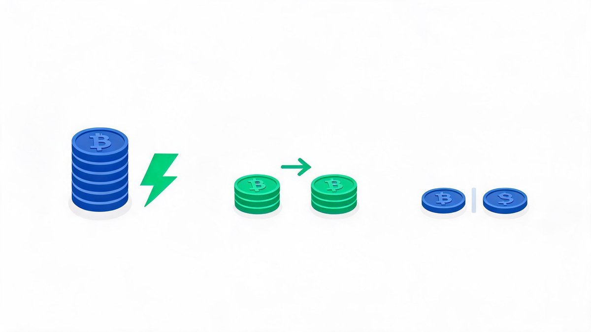
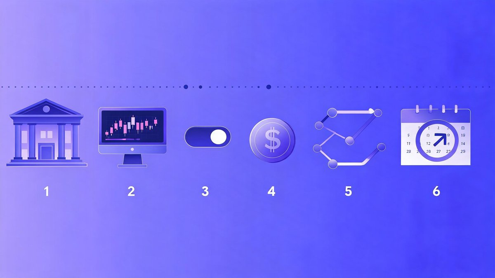
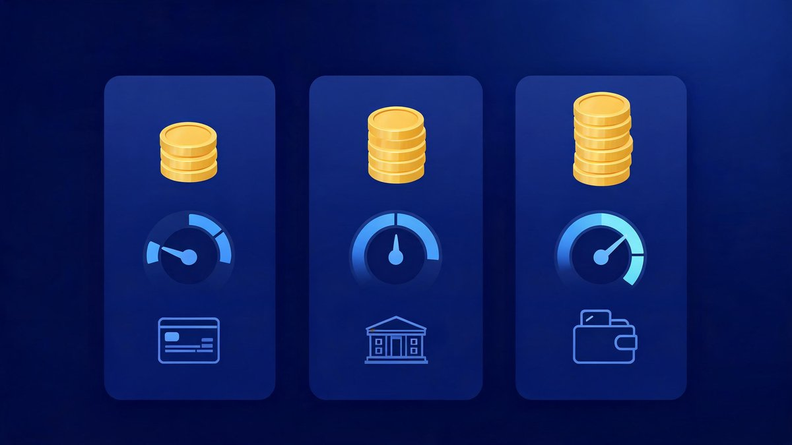

Crypto exchanges for beginners with low fees (2026) — learn how to pay less: avoid high-cost instant buys, use maker/taker pricing, and pick beginner-friendly platforms. Updated: Sep 21, 2026 · Educational only · Availability varies by country.
🔑 Key Takeaways
- Low-fee beginner picks (2026): Kraken (learn Pro limit orders), Coinbase (switch to Advanced Trade), Bitstamp (transparent volume-tiered spot)
- Instant buys are the most expensive way to buy — maker/taker pricing on Pro/Advanced views costs a fraction
- Six ways to pay less: bank-transfer funding, limit orders, small test buys, cheaper networks, batched withdrawals, low-fee-view DCA
- Fee structures change — always check each exchange’s official fee page before funding
Low-Fee Beginner Picks (2026)
Kraken — Low fees when you learn Pro (limit orders)
Why it’s low-fee for beginners: instant buys cost more, but Pro maker/taker tiers drop fees once you place limit orders — independent reviews put Kraken Pro at roughly 0.16% maker vs 0.26% taker at entry tiers (ChangeHero), with taker fees across major exchanges starting around 0.25% (Quartz).
Good for: beginners willing to learn one Pro skill (limit orders) to pay less.
Notes: bank transfer funding often cheapest; card fees vary by country.
Coinbase — Advanced Trade lowers costs vs Instant Buy
Why it’s low-fee for beginners: move from Simple to Advanced Trade to access maker/taker pricing. Honest caveat: simple purchases on beginner-friendly platforms can run 1.5%+ plus spread (Paybis) — that gap is exactly what Advanced Trade closes.
Good for: app-first beginners who want easy onboarding, then lower fees.
Notes: card purchases convenient but higher cost; bank transfers usually cheaper.
Bitstamp — Transparent, volume-tiered spot fees
Why it’s low-fee for beginners: clear tiered schedule; competitive spot trading for majors. Quartz calls it “the plainest exchange on this list” — no native token, no rewards card, no sprawling product maze; just spot trading with transparent pricing.
Good for: simple spot buys via bank transfer with transparent pricing.
How Crypto Fees Work (for Beginners)

- Instant buy “convenience” fees: one-tap buys on the simple screen—fast, but highest total cost
- Maker/taker (Advanced/Pro): lower posted fees when you place limit orders (maker) or take at market (taker)
- Spread: the price gap between buy and sell; tighter on liquid pairs like BTC/ETH
- Funding/withdrawal fees: bank transfer often cheapest; cards are fast but pricier; on-chain withdrawals add network fees
How to Pay the Lowest Fees (Step-by-Step)

- Deposit by bank transfer (ACH/SEPA/UPI/etc). Avoid high card fees for larger amounts
- Switch to Advanced/Pro and select the limit order type
- Place a maker limit order slightly below current price (buy) or above (sell) so you add liquidity
- Start with small amounts to practice; check the fee line before you confirm
- Withdraw on cheaper networks when possible, and batch withdrawals
- Set up DCA (recurring buys) in the view that shows the lowest total fees
Low-Fee Comparison (At a Glance)

| Exchange | Beginner path to low fees | Instant buy cost | Maker/taker pricing | Funding notes | Fee page |
|---|---|---|---|---|---|
| Kraken | Use Pro with limit orders (maker) | Higher (convenience) | Tiered by volume on Pro | Bank transfer often cheapest | Official |
| Coinbase | Switch to Advanced Trade | Higher (convenience) | Maker/taker on Advanced | Card higher; bank cheaper | Official |
| Bitstamp | Trade spot on the main book | N/A (focus on spot) | Tiered by 30-day volume | Strong for bank transfers | Official |

FAQs
Which exchange has the lowest fees for absolute beginners?
Instant buys are usually priciest. Fees drop when you switch to Advanced/Pro and place limit (maker) orders. Compare fee pages before you fund.
How much can I save by using limit orders?
The gap is large: maker fees on Pro-style views can be a fraction of a percent — roughly 0.16% on Kraken Pro at entry tiers per ChangeHero — while one-tap instant buys commonly cost over 1% plus spread on major platforms. Exact rates vary by exchange, pair, and volume tier.
Are card purchases bad?
Cards are fast but cost more. For larger amounts, bank transfers are typically cheaper.
Does DCA increase fees?
Recurring buys can be cheap if they run in the Advanced/Pro view with maker/taker pricing. Check your exchange’s settings.
What about withdrawal fees?
On-chain withdrawals include network fees. Choose cheaper networks where available and batch when practical.
Related Guides
- Top 3 Crypto Exchanges (2026) — Main Guide
- Safest crypto exchange for beginners (2026)
- Best crypto exchanges for beginners (2026) — coming next in this series
- What to look for in a beginner exchange (2026) — coming next in this series
The Bottom Line
Low fees are not an exchange feature — they are a beginner skill. Pick a platform with a clear path from simple to Pro (Kraken), fund it by bank transfer, and place your first maker limit order this week. The habits in step 1–6 above will save you more than any headline fee comparison ever will. For the full platform rundown, see the Top 3 Crypto Exchanges main guide, and lock the account down first with our safest exchanges checklist.
Sources: ChangeHero — Kraken Pro maker/taker tiers, Quartz — Best crypto exchanges for beginners, ranked (Sep 2026), Investopedia — Best Crypto Exchanges (low-fee research), Paybis — Coinbase simple-buy fee note, Kraken/Coinbase/Bitstamp official fee pages. Educational only, not financial advice. Fees change — verify on official fee pages before funding.